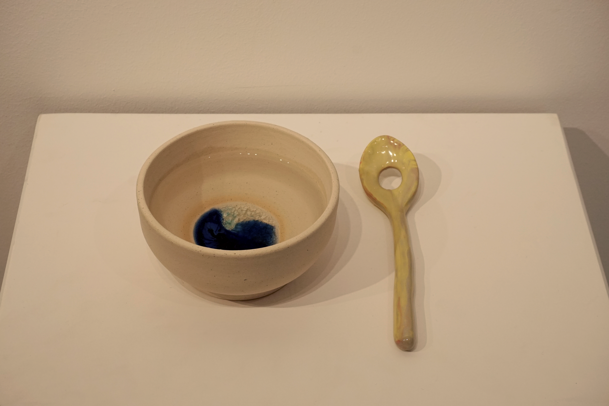
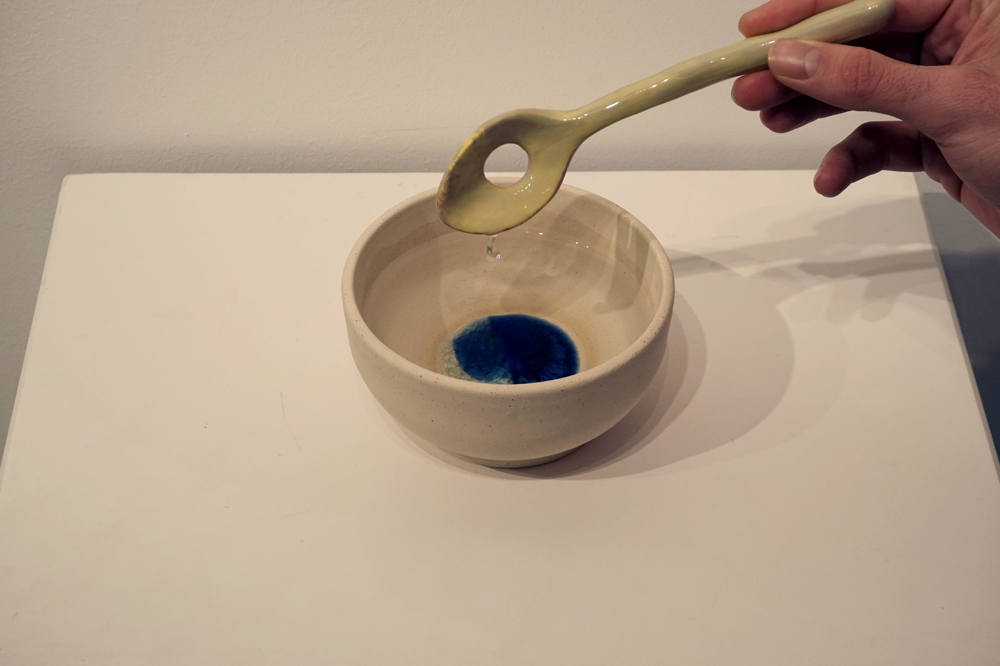

Cucchiaio con buco
Argilla, vetro, acqua, porcellana smaltata
Soo Kim
Una ciotola realizzata con terra proveniente da Chicago contiene acqua e un cucchiaio. Mentre l'acqua fuoriesce dal cucchiaio, la ciotola raccoglie ciò che non può essere contenuto. Questa interazione tra recipiente, utensile e fluido incarna la tensione tra il trattenere e il lasciar andare. Lo spostamento dell'acqua riecheggia il movimento dei corpi e delle culture attraverso i confini geopolitici, invitando a riflettere sulla migrazione e sull'adattamento.